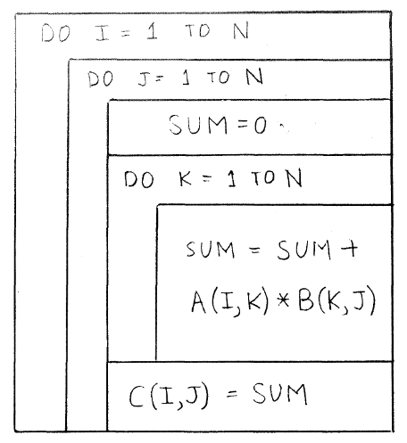
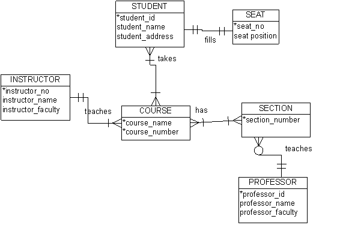
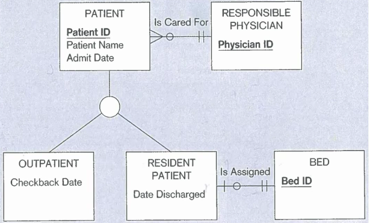
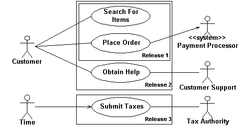
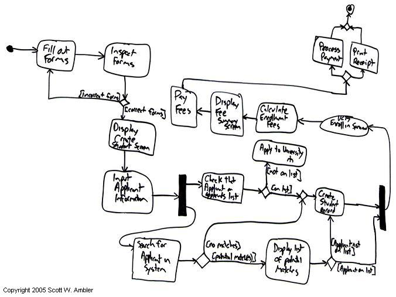

{kind=link}
{kind=link}
{kind=link}
{kind=link}

pkb contents > modeling | just under 1727 words | updated 05/21/2017
The following notes are largely based on Steirn (1999) and Scott Page's Coursera class on Model Thinking.
Note that there's a lot of overlap between depicting a system and implementing one; between depicting a process and improving it; between modeling a problem and analyzing it; between modeling a system and modeling a database; between model forms and knowledge organization structures.
Because a model is a representation of a system, the model needs to include contextual metadata clarifying the date and/or version of the system it describes.
Per Scott Page, modeling helps us:
Models can have a general form (e.g. entity relationship diagram) somewhat corresponding to information structures, but be executable in different notations (e.g. Chen, crow's foot). This page organizes models by form and notation, following Steirn (1999), who seems very similar to Dennis et al. (2012):
Smartdraw.com (n.d.):
Models could also be grouped by the business problems they solve (e.g. poor quality, lack of strategic direction, etc.); by domain of origin (models have been developed sequentially or in parallel by Taylorists, postwar Japanese manufacturers, industrial engineers, social scientists, and software developers); by practice area (different models may tend to be used in UX, database development, consulting, requirements management, etc.); by methodology (e.g. Agile, SDLC); or as they appear in stages of a process/lifecycle (e.g. identifying a problem, analyzing a problem, designing solutions, etc.):
AKA decision flow charts, logic flow charts, and logical decision flow charts. Flow charts model decisions, a type of process. Languages that model processes more generally can also represent decisions.
The basic elements of flow charts are available in MS Visio's language level diagrams stencil:
AKA Chapin charts, structograms, structured flowcharts. Per Nassi and Shneiderman (1973), "We propose a flowchart language whose control structure is closer to that of language amenable to structured programming:"

All ERDs capture the entities in a system, along with their attributes and interrelationships; enhanced ERDs include superclasses and subclasses.
Per Dybka (2014), there are many notation styles:
This is a notation that describes the optionality/modality/participation and cardinality/multiplicity of a relationship, so it can be used within other modeling systems. Crows-foot notation annotates relationships with the symbols:
Entity A is on the left, entity B is on the right. They are connected with an annotated line. Annotations on the right side of the line describe how A relates to B: for a single row in A, how many rows minimum and how many rows maximum could appear in B? Annotations on the left side of the line describe how B relates to A: for a single row in B, how many rows could appear in A?


Predates ER notation, but increasingly popular as a database modeling language; see notes on UML.
Per Le Vie and Donald (2000), "Data flow diagrams have replaced flowcharts and pseudocode as the tool of choice for showing program design" --- at least in the early stages of system design --- because they show data along with program functions that transform the data. DFDs are highly compatible with object-oriented programming and design. Gane-Sarson and Yourdon-Coad notations are slightly different, but both use the following elements:
DFDs are created for different levels of the system, starting with the context diagram (the most general view), proceeding to level 0 diagrams and level 1 diagrams. Per Le Vie and Donald (2000), only certain data flows (usually!) are valid:
UML use case diagrams are used to organize use cases. The basic elements:

Per Ambler (n.d. c), deployment diagrams depict the hardware and software components of a system. Deployment diagrams are slightly more detailed than network diagrams, and include:
OO models show inheritance as well as decisions, relationships, and processes. Per Steirn (1999), several earlier methods (Shlaer/Mellor, Rumbaugh's Object Modeling Technique (OMT), Booch) were subsumed by UML in 1997.
Per La Vie and Donald (2000), OMT produces three views of a system: "The Object Model describes the static system components and is modeled using object diagrams. The Dynamic Model describes the dynamic system components that change over time and are modeled using state diagrams. The Functional Model describes operations performed on data in a system and uses data flow diagrams."
Activity diagrams are similar to flowcharts and data flow diagrams, since they focus on depicting a process corresponding to a specific use case or usage scenario. Per Ambler (n.d. b), activity diagrams use the following UML elements:

Ambler, S. (n.d. a). Agile models distilled: Potential artifacts for agile modeling. Retrieved from http://www.agilemodeling.com/artifacts/
Ambler, S. (n.d. b). UML 2 activity diagrams: An Agile introduction. Retrieved from http://www.agilemodeling.com/artifacts/activityDiagram.htm
Ambler, S. (n.d. c). UML 2 deployment diagrams: An Agile introduction. Retrieved from http://www.agilemodeling.com/artifacts/deploymentDiagram.htm
Dybka, P. (2014). ERD notations in data modeling. Vertabelo Academy. Retrieved from http://www.vertabelo.com/blog/technical-articles/comparison-of-erd-notations
Dennis, A., Haley Wixom, B., & Tegarden, D. (2012). Requirements determination. In Systems analysis and design: An object oriented approach with UML (4th ed., pp. 109–152). Hoboken, NJ: Wiley.
Le Vie, D. S., & Donald, S. (2000). Understanding data flow diagrams. In Annual Conference - Society for Technical Communication, 47, pp. 396–401.
Meadows, D. H., & Wright, D. (2008). Thinking in systems: A primer. White River Junction, Vt.: Chelsea Green Pub.
Nassi, I., & Shneiderman, B. (1973). Flowchart techniques for structured programming. SIGPLAN Not., 8 (8), 12–26. Retrieved from https://www.cs.umd.edu/hcil/members/bshneiderman/nsd/1973.pdf
Smartdraw.com. (n.d.). Diagrams. Retrieved from https://www.smartdraw.com/diagrams/?exp=ste
Stiern, K. (1999). Comparison of diagramming methods. Retrieved from http://www.umsl.edu/~sauterv/analysis/dfd/DiagrammingMethods.html